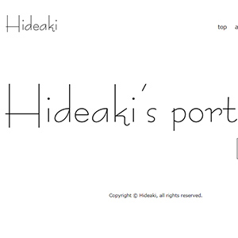

works
About
大分市在住。
長らくサービス業界で働いていたが、40歳を過ぎてwebクリエイターを目指してhtml/css・dreamweaver・photoshop・illustratorを職業訓練で学ぶ。
2017年10月職業訓練を修了。
所有資格
- Webクリエイター能力認定試験 エキスパート(HTML5) (サーティファイ)
- Photoshopクリエイター能力認定試験 エキスパート (サーティファイ)
- Illustratorクリエイター能力認定試験 エキスパート (サーティファイ)
- ネットマーケティング検定 (サーティファイ)
- ビジネス著作権検定 上級 (サーティファイ)
Works
